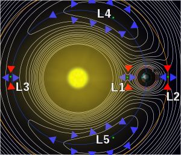

La sphère de Hill (ou sphère de Roche) d’un corps A en orbite autour d’un corps B, plus lourd, est la zone d’influence gravitationnelle de ce premier corps A. C’est-à-dire la zone dans laquelle si on introduit un troisième corps C, de masse plus faible que A et B, celui-ci reste en orbite autour du corps A sans être capturé par le corps B Dans l’image ci-dessous sont représentées les sphères de Hill de la Terre et du Soleil. Celle de la Terre s’étend de L1 à L2.

Chloé Meynaud
·
15 mai 2023
Introduction
Dans cet article, nous allons parler du principe de l’assistance gravitationnelle qui consiste à utiliser volontairement l’attraction d’un corps céleste (planète, lune...) pour augmenter la vitesse d’un engin spatial dans l’espace. La sonde Voyager 2 a notamment utilisé ce principe passant à proximité de la planète Jupiter pour continuer son chemin en ayant gagné de la vitesse. Elle a effectué la même manœuvre de nouveau au-dessus de Saturne et d’Uranus. Vous pouvez voir ci-dessous la sonde passant à proximité de Jupiter et remarquer qu’un changement de direction et de vitesse apparait.
Simulation physique
Afin de comprendre dans son intégrité la méthode de l’assistance gravitationnelle, nous devons faire quelques rappels sur les énergies.
Rappel sur la chute libre
Prenons l’exemple d’un objet en train de tomber sur Terre (sans frottements). Cet objet a :
- Une énergie potentielle, qui dépend de sa position (sa hauteur z) \(E_p=mgz\).
- Une énergie cinétique reliée, qui dépend de sa vitesse, exprimée \(E_c=\ \frac{1}{2}mv^2\).
- Une énergie mécanique qui est définie comme la somme de l’énergie cinétique et l’énergie de position : \(E_m=\ E_p+\ E_c\). Lorsqu’un objet n’est soumis qu’à son poids et ne subit pas de frottement, son énergie mécanique se conserve.
Pour illustrer cela, prenons l’exemple de la chute libre. Lorsqu’un objet tombe en chute libre, son énergie de position diminue car il se rapproche du sol et comme l’énergie mécanique doit se conserver, son énergie cinétique augmente obligatoirement.
Vous avez maintenant fin prêt pour comprendre le principe d’assistance gravitationnelle !
Mais pourquoi décidons-nous d'utiliser l'assistance gravitationnelle ?
Tout d’abord, lorsqu’une sonde est envoyée dans l’espace, on ne la lance pas en ligne droite d’une planète à une autre. Le temps du voyage, la planète aura bougé et il faut donc viser la position qu’aura la planète lorsque la sonde arrivera sur son orbite. La gravitation impose également de nombreuses contraintes rendant difficile l’option du lancement en ligne droite. Enfin une dernière contrainte est celle du carburant. De nos jours, nous sommes réduits à faire des voyages avec des masses peu importantes et selon des trajectoires bien déterminées lorsqu’on veut visiter une planète du système solaire afin de réguler au mieux la consommation de carburant. L’assistance gravitationnelle intervient donc dans ce but d’économiser du carburant car elle permet de faire augmenter l’énergie cinétique de l’engin spatial et également de modifier sa direction.
Principe de la manoeuvre
Nous allons prendre l’exemple de Voyager 2 au passage de Jupiter pour la suite des explications.
Ainsi, dans un premier temps, l’engin spatial s’approche de la planète et rentre dans sa zone d’influence appelée Sphère de Hill.
Détails...
À mesure que la sonde s’approche, elle voit sa vitesse augmenter : elle « tombe » vers la planète et donc accélère : son énergie cinétique augmente et son énergie potentielle diminue. Ensuite, en s’éloignant de Jupiter, la sonde perd obligatoirement de la vitesse et donc de l’énergie cinétique. Or comme nous l’avons vu plus tôt, l’énergie mécanique se conserve. Mais dans ce cas-là, ce n’est pas l’énergie mécanique de la sonde qui se conserve, mais la somme de l’énergie mécanique de la sonde et de Jupiter. Voyager 2 repart de Jupiter avec plus d’énergie mécanique que lorsqu’elle est arrivée et donc également plus rapidement. En effet comme on a l’égalité (équation) alors si l’une des deux énergies diminue, l’autre augmente.
Mais pourquoi est-ce la sonde qui gagne de l’énergie et pas la planète ?
En passant à l'arrière de la planète par rapport à son déplacement sur son orbite, la planète a tendance à vouloir s’éloigner de la sonde. Dans le référentiel de la planète, la sonde prend de la hauteur et gagne donc de l’énergie potentielle. C’est là qu’elle gagne de l’énergie mécanique. Cette énergie potentielle est ensuite convertie en énergie cinétique À l'inverse, si la sonde passe par devant, l’astre a tendance à vouloir s’approcher de la sonde. Dans le référentiel de la planète, la sonde perd de la hauteur et perd donc de l’énergie potentielle, ainsi de la vitesse.
Exemples d'utilisation
La technique de l’assistance gravitationnelle est extrêmement utile et a été utilisé dans de nombreuses missions pour non seulement économiser du carburant mais également réduire le temps de voyage. Le premier vol interplanétaire utilisant l’assistance gravitationnelle fut lancé par la Nasa en 1974. C’est la sonde Mariner 10 qui a utilisé Vénus le 5 février 1974 pour atteindre Mercure le 16 mars 1974.
Et comme évoqué plus tôt, l’assistance gravitationnelle a été utilisé pour la mission spatiale Voyager 2. Cette sonde avait pour mission de collecter des données sur les planètes extérieures (Jupiter, Saturne, Uranus et Neptune) et pour cela elle s’est servie du procédé expliqué dans cet article à l’approche de Jupiter puis de Saturne et Uranus. C'est aujourd'hui le seul engin spatial à s'être approché d'Uranus et de Neptune et à les avoir survolées. La configuration particulière des quatre planètes géantes qui a rendu leur survol possible ne se reproduit que tous les 176 ans.